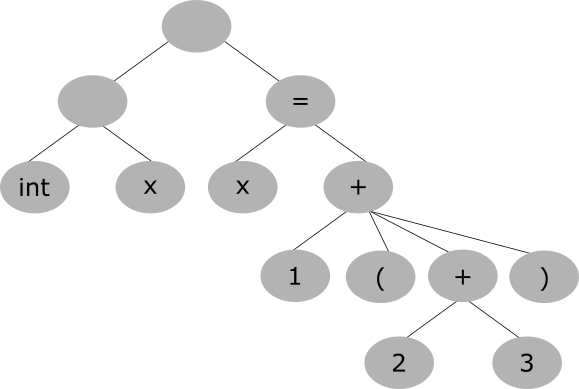

コンパイラ開発に関する世界観です。
コンパイラには以下のフェーズがある。
１．字句解析（文字トークンの解析）
２．構文解析（構文ルールの解析、トークンが葉になるパースツリーの作成）
３．中間コードの作成（よく使われる中間コード表現は3番地コード）
４．最適化（コンパイラが工夫することで実行効率のよいコードの記述に変換する）
５．コードの生成
後日注記：解析を行う上で、スタックを用いた再帰的な処理を行うことが多い。たとえば、算術式における括弧は、最後に開いた括弧が最初に閉じるべき括弧となる。これらは再帰的に処理され、構文ツリーとなる。
詳しくは以下のページ・書籍が参考になる。
yeccとlexを使うことで、面倒な字句解析や構文解析を行わなくても、lexが字句解析プログラムを、yaccが構文解析プログラムを自動で作ってくれる。これにより、簡単にプログラミング言語を作ることができる。
独自のプログラミング言語を作るために、以下のyaccとlexの解説サイトが参考になる。
汎用言語のコンパイラを作るためには、コードの中間表現である「中間コード」を作らなければならない。よく使われるのは「3番地コード」と呼ばれる中間言語表現で、3つのアドレスで算術式を表現する。その上で、さまざまな最適化技術を使って、最適化処理（コードを書かれている以上に速くする処理）を行う。
2023.08.17編集
flexはGNUによるlexの実装で、bisonはGNUによるyaccの実装。
GNUツールチェインも参照のこと。
lexやyaccでは、C言語のコードと一緒に言語表現の記述を行う。
まず、「定義部」と呼ばれる最初の「%%」（各部位を分割するために使われる）までの記述で、そのまま出力される「%{～%}」の中でC言語での初期化処理を記述する。
次に、「規則部」と呼ばれる、lexの正規表現によるトークンで、文字列が正規表現でマッチした場合にC言語のアクションが実行されるように記述する。正規表現とC言語で記述する。
また、非終端子（トークンの複合体で、最後まで分割していくと終端子すなわちトークンになる）を用いてyaccの構文規則を記述する。
yaccの構文規則では、「line_list」や「line」や「expression」や「term」のような英単語のキーワードと、「:」や「|」や「{}」や「;」を用いた専用の式で、構文にマッチする規則（たとえば1回以上の繰り返し）を記述し、演算子や「$$」や「$1」などのデータ型が構文とどのように対応して実行されるかを記述する。
このように、lexとyaccでは「正規表現と構文規則へのマッチ」をベースに、プログラミング言語を作るための基礎を提供する。
以上は以下のページを参考にして執筆しました。
2023.08.17
eval()は、コンパイラ言語よりもインタープリタ言語に多くみられる言語の仕組みで、「文字列の内容を式（プログラムコード）として評価（実行）することができる」というもの。
Rubyなどでeval()を使うと、文字列の内部を言語として評価できるため、たとえば"1 + 2"という文字列から3を返したり、変数名を宣言して展開したりできるなどとても強力である。
しかしながら、eval()は多用しすぎると処理効率や速度が遅くなるという欠点がある。単なるテンプレートエンジンであれば、正規表現による検索・置換をした方が速い。
リフレクションとevalも参照のこと。
Lispコンパイラを作るなら、以下の記事が参考になる。
動的スコープで、値と型の定義、字句解析、構文解析、さまざまな関数とeval()をOCamlで書くことで、Lispの処理系を実現する。
Lispも参照のこと。
以下は僕の主観的方法論を書いただけにすぎず、経験や知識に裏打ちされた正しい方法ではない。
まず、パースの段階で、字句解析と構文解析を行う。字句解析では、言語の文字列としてのトークンを解析し、構文解析では、構文ルールを解析する。文法的記述を解析して、コードの意味を自分の言語仕様通り解析する。言語的なパースツリー、すなわちトークンを葉とするようなツリーを作る。
次に、パースツリーから中間言語・三番地コードに変換する。そして、中間言語に対して最適化をかける。
最後に、コード作成を行う。どのような命令とレジスタを使うのかを選択し、変数やサブルーチンの記述をポインタとジャンプ命令に変換し、条件分岐・繰り返しなどの文法的記述を変換する。アセンブリ言語を出力し、アセンブルして機械語のオブジェクトを出力し、オブジェクト同士をリンクする。
また、誤り訂正では、文法的な誤りがないかを確認する。たとえば、関数の呼び出し元と呼び出し先が適切かどうか、変数やキーワードなどの宣言と利用が適切であるかどうかなどを確認する。
（注記：以下の内容は自分が考えて記述したため、一般的な方法とは異なるかもしれません。）
インタープリタを作るためには、まず字句解析器で言語のキーワードや変数や関数の識別子を拾って、トークンに変換する。ifやfor, whileなどの単語、あるいは$nameやfunc()などの識別子は、それぞれの単語ごとの「トークンの並び」に変換される。
次に、構文解析器によって構文パターンを解析し、パースツリー（トークンを葉とし、評価すべき優先度からツリー構造にした構文ツリー）に変換する。この時、実際のトークンの並びが、構文パターンとどのように合致しているかを知る。たとえば((1 + 2) - 3)のようなコードやfuncA(funcB())のようなコードやx = y - 3のようなコードを解析してパースツリーにする。
そして、次にこの構文解析の結果から、パースツリーの意味を解析する。これにより、構文は中間言語表現となり、変数や関数の定義はシンボルとなる。
最後に、状態ベースの仮想マシン（シンボル名などをステートフルに保持するインタープリタの仮想マシン）により、この構文解析の結果（パースツリーの言語的な実行をどのようにするか）の順序的な実行の並びを中間コードあるいは機械語に変換して、ひとつひとつ評価して処理を行う。変数などはセグメントにおけるメモリアドレスに変換され、条件分岐・反復・サブルーチンなどはジャンプ命令などに置き換えられる。
そして、最後に実行する。
基本的にこんな感じかもしれないが、状態ベースの仮想マシンにはスタックやヒープによる変数の保持や、型の評価なども行わなければならない。基本的にこれくらいを作ることになるが、「evalさえあれば何とかなる」というところも多い。
後日注記：僕は、原始的なインタープリタを作るのは、そんなに難しくはないと思います。確かにトークンや構文を解析するのは難しいでしょうが、いったんプログラムが記述された文字列（式・文）を解析して、パースツリーのデータ構造に落とし込んで、厳密で単純な「構文ルールのパターン」に基づいて意味を解析してしまえば、あとはキーワードごとに別の処理を行うだけです。キーワードを増やせば増やすほど、さまざまなことができる言語になるため、機能を付け加えるのは面白いでしょう。
パースツリーは、
int x = 1 + (2 + 3)
であれば以下のようになると考えると分かりやすい。
このようにすれば、文の中心にあるトークンを親として、その属性となるトークンを子として、演算の順番通りにツリー構造で純粋に辿ることができる。
詳しくは以下が参考になる。（上の図は以下のリンク先の図を参考にInkscapeを用いて自分で描いた。）
3番地コードとは、2つの入力と1つの出力のアドレスによって成り立つコード。
たとえば、
x = y + z
のようなコードである。
コンパイラを作る上で、中間形式のパターンの1つとして知られている。以下のようなコードは、
x = 3 + (1 + 2)
このようなコードに直される。
t1 = 1 + 2 x = 3 + t1
コンパイラや言語処理系によっては3番地コードはプログラムのコードの最適化をかけるのに適している。
3つのアドレスだけのコードだから、「3アドレスコード」と呼ばれる。これを日本語に訳して、「3番地コード」である。
（以下は徹底攻略 応用情報技術者教科書 平成30年度を参考に執筆しました。）
最適化の主な手法は、
| 手法 | 説明 |
|---|---|
| ループ最適化 | 変化しないループ（ループ不変式）を外に出す |
| 局所最適化 | メモリを近い場所で参照する（局所参照性の向上） |
| プロシージャ間最適化 | 関数をインラインに埋め込むなど、コード全体を最適化する |
などがある。
より詳しくは以下のようなページが参考になる。
後日注記：自分のプログラミング言語を作る上で、ここに書かれている最適化の手法をすべて作る必要はありません。GCCやLLVMのバックエンドを使えばいいからです。自分の作ったプログラミング言語を解析する部分はGCCやLLVMのフロントエンドとして記述し、最適化やネイティブコードを作成する部分はGCCやLLVMのバックエンドを使えばいいのです。
2023.05.07
2023.05.12編集
コンパイラの中間コード作成などについては、以下が詳しい。基本的には3番地コードを作らないといけない。さまざまな最適化手法がある。
後日注記：アセンブラを知っている人なら分かる通り、三番地コードはアセンブラの機械語命令に近い。数学的な=を使った右辺から左辺への代入式を、三番地コードに書き換えることで、アセンブラへの変換がやりやすくなる。アセンブラに近いため、ハンドアセンブルならできるようなプログラムの最適化もしやすくなる。何より、プログラムの制御部分をキーワード的に書き換えて、変数への代入式を三番地コードに直すだけで、コンパイラの基本部分が開発できる。
2024.09.13編集
コンパイラは、文法やキーワードが多いために難しく感じられるが、基本的にはソースコードと中間コードとアセンブリ言語の「フォーマットを変換」するだけで作れる。
特に、C言語の場合、if文とfor文を書き換えて、関数をCALL/RETあるいはジャンプ命令などに変換し、変数宣言をmovに変換するだけで、おそらく原始的なコンパイラは作れる。
また、C++やJavaのようなクラスは、関数ポインタを保持しながらメモリに変数のインスタンスを作成すれば、きっと作れるはずである。Rubyのような動的な言語でも、基本はJavaと変わらないだろう。言語処理系の開発は、誰もが一度はやってみたい「夢のプログラム」である。都合の良いことに、GCCやPerl/PHP/Python/Rubyのようなオープンソースの言語は、ソースコードが公開されている。そこから、何とかして作れば良いのかもしれない。ある意味、Lispの処理系なら簡単である、という話は良く聞く。Lispはコンパイラの作りやすい言語である。
後日注記：この文章はコンパイラの仕組みについて何も知らなかった自分が書いた文章です。基本的に、トークンと構文を解析して、パースツリーさえ作ってしまえばあとは簡単です。そのツリーをトラバース（一歩一歩辿っていく）しながらアセンブリ言語を吐けばいいのです。難しいのは、コンパイラを実装することよりも、言語の構文ルールをデザインすることでしょう。
最近、僕の参加しているオンラインプログラミングサークルで教えてもらった言語に、Brainfuckという言語があります。
昔から、Brainfuckは面白系の言語として有名で、僕は「タブやスペースだけでプログラミングができる面白い言語」だと思っていましたが、それはWhitespaceという別の言語だった模様。Brainfuckはもう少しいくらかの記号を使う模様です。
今見ると、アセンブラとよく似ている。機械語命令をそのまま記号にした感じのような雰囲気がしている。
なぜ、この言語を紹介するかというと、「コンパイラを作るための練習になるから」です。
Brainfuckは、コンパイラを作りやすい。命令が少ししかなく、ポインタをいくらか操作して入出力命令に渡すだけで、C言語で（たぶん簡単に）書けるということです。
コンパイラを作りたいと思っている同士諸君、まずはBrainfuckを作りましょう。
ちなみに、オランウータンの言語のような面白系言語として、Brainfuckと命令が等価なOok!という言語があります。
命令は「Ook.」と「Ook?」と「Ook!」だけ。オランウータンの知能を馬鹿にしすぎではないでしょうか？面白いですけど。
現代的なコンパイラの作り方を学ぶには、LLVMを学ぶのがいいと思います。
LLVMは最適化においても中間言語表現においても、僕がこの記事に書いたのとは比べ物にならないような、はるかに最先端かつ詳細なコンパイラ開発を行っています。
LLVMを参照のこと。
以下はGoogleのAIが書いた簡易コンパイラ。数値の加算と減算を解析し、x86-64アセンブリコードを出力する。
#include <stdio.h>
#include <stdlib.h>
int main(int argc, char **argv) {
if (argc != 2) {
fprintf(stderr, "引数の個数が正しくありません\n");
return 1;
}
char *p = argv[1];
// アセンブリの冒頭部分
printf(".intel_syntax noprefix\n");
printf(".global main\n");
printf("main:\n");
printf(" mov rax, %ld\n", strtol(p, &p, 10)); // 最初の数を読み込む
// '+ <数>' または '- <数>' を繰り返し処理
while (*p) {
if (*p == '+') {
p++;
printf(" add rax, %ld\n", strtol(p, &p, 10));
continue;
}
if (*p == '-') {
p++;
printf(" sub rax, %ld\n", strtol(p, &p, 10));
continue;
}
fprintf(stderr, "予期しない文字です: '%c'\n", *p);
return 1;
}
printf(" ret\n");
return 0;
}
以下はこのコンパイラ自体のビルド。
gcc -o compiler compiler.c
以下はこのコンパイラを使ってアセンブリコードを生成するコマンド。
./compiler "5+3-2" > tmp.s
以下はアセンブリコードを機械語に変換して実行するコマンド。
gcc -o tmp tmp.s ./tmp echo $? # 結果を表示（6）
strtol()関数は文字列をlong型整数に変換するCの関数です。
2026.02.19-20
僕は、AIや人工知能の技術を応用して、「AIコンパイラ」を作ってはどうかと思います。
今のプログラミング言語やコンパイラというのは、コンピュータが理解できる「厳密な記述」を行い、コードに書かれた以外の記述が動くことはありません。
ですが、これを「AIによるコンパイラ」とするとどうでしょうか。人間が適当に、いいかげんに書いたコードが、AIが解釈することで「こういう風に動いてほしいのだな」と解析され、適当にコンパイラが「忖度」して動くのです。
たとえば、「ウィンドウを表示してユーザーを案内しろ」とか、「ネットワークを正常に直せ」とか、そういう「人間的な言語」のコードを書いて、それをアレクサのようなAI・人工知能が解釈して、その通りに動くのです。
これができれば、コンピュータは「本当に人間と同じぐらいの知性を持った」ことになるでしょう。
AIも参照のこと。
インタープリタを作るのは、非常に難しい作業であると、多くの人は思われると思います。
ですが、それは、近代的な複雑なプログラミング言語を知っている、わたしたちだからです。
実際のところ、インタープリタの基本形は、「行を一行読み込んで、それをたくさんの機械語命令に変換する」というプログラムです。
一行読み込んで変換することができたら、それを複数行に拡張することは簡単です。
たくさんの機械語命令に変換するのは、難しいと思われるかもしれませんが、実際は単なる変数や関数の定義、制御構造などを作るだけであり、ある程度のテンプレートとなる機械語のフォーマットを用意しておいて、キーワードごとにそのフォーマットに従って言語の記述を機械語に変換すればいいのです。
インタープリタだけではなく、コンパイラも同じです。原始的なコンパイラを作るのは、難しくはないと僕は思います。
実際のところ、コンパイラがやっていることは単純です。
それは、「プログラムを動作や機能を変えずに高級言語から機械語に変換する」ということをやっているだけだからです。
いわば、高級言語で書かれたプログラムというのは、「絵に描いた餅」であり、実際に食べられる（実行できる）ような餅ではありません。
コンパイラを使って高級言語のソースコードを機械語に変換することで、はじめて、そのアーキテクチャ（機械語の命令セット）のCPUで動く、ネイティブなバイナリのプログラムになるのです。
なので、コンパイラは本当はそんなに難しいことをしていません。高級言語という絵に描いた餅を、機械語という本当の食べられる餅に変換しているだけです。
ですが、コンパイラが何もしていないわけではありません。なぜなら、高級言語にはさまざまな機能が豊富に存在し、その機能を使って決められた仕様通りに書かれたプログラムを、動作を変えることなく機械語に変換しなければならないからです。
コンパイラの本質とは、そのような「高級言語を実現する」ということにあります。
プログラミング言語にはさまざまな仕様があります。構造化プログラミングの構文、メモリや変数定義と代入、数値や論理的な計算、I/O、オブジェクト指向、ライブラリAPIのような、さまざまな「機能」をコンパイラは実現します。この「機能」を使って書かれたプログラムを、コンパイラは正しく機械語に変換して、CPUで動くような形式のバイナリファイルに出力します。
同時に、ネイティブのバイナリを吐き出すコンパイラ以外にも、インタープリタや仮想マシン（VM）とバイトコードを使う言語もあります。それぞれ違った特徴とメリット・デメリットを持っていて、すべてのプログラミング言語を一律に優劣で比較することはできません。そのような「自分にしかないメリット（とデメリット）を持ったプログラミング言語」を作るために、コンパイラの役目はあると言えます。
2023.06.26
僕自身、コンパイラを作ったことがないため、頓珍漢なことを言っているかもしれませんが、コンパイラを作る上では、変数名や関数名と、機械語のオフセットアドレスのマップを作る必要があると思います。
C言語のような高級言語を、低レベルな機械語に変換する上で必要なのは、変数宣言や変数の代入・参照を、メモリのオフセットアドレスに書き換えることです。
そのため、変数名と、メモリのオフセットアドレスを対応付ける「マップ」（あるいは対照表）が必要です。
また、関数も同様です。関数をジャンプ命令に変換するためには、行番号のオフセットアドレスと関数名を対応付けるマップ（あるいは対照表）が必要です。
それくらいができたら、ある程度の高級言語のコンパイラは作れるかもしれません。
if文やfor文などはテンプレート的に書き換えることができるでしょうし、クラスやオブジェクトはグローバル変数のようなインスタンス的構造体を作って、その構造体と関連付けられた関数をメソッドとして作り、メンバへのアクセス権を確認する機構を作ります。特に、パブリックやプライベートのようなアクセス権を実現するためには、それなりの専用の機構が（機械語で）必要となるでしょう。
ただし、実際のところ、Linuxなどのカーネルの管理するアドレス領域には、テキスト領域（プログラムコード）、スタック領域（ローカル変数・関数の引数）、そしてヒープ領域（malloc()の管理）があります。C言語のプログラムでは、関数の呼び出しを行うと、ローカル変数や関数の引数などをスタックに順に積み上げて確保し、関数の呼び出しが終わると削除します。
2024.08.12-13
僕はかつてより、OS自身がひとつのプログラムであり、バイナリのコマンドプログラムも機械語のプログラムであり、OSの上でプログラムが動くということが、直感的に理解できませんでした。
OSのカーネルがプログラムで、ユーザーランドもプログラムで、どうしてカーネルの上でユーザーランドのコマンドプログラムが動くのか、分からなかったのです。
特に、僕は「カーネルとユーザーランドが切り替わる」と理解していたせいで、カーネルとユーザーランドはどちらも独立したプログラムなのに、どうしてその二つの実行が切り替わることができるのか、分かりませんでした。
ですが、この解は、「OSは機械語のプログラムを実行するインタープリタのようなものだ」という考え方をすると、直感的に理解できました。
すなわち、機械語として書かれたプログラムコードを、一行一行解釈しながら、マルチタスクと仮想アドレス空間を成り立たせて、並列で制御しながら、インタープリタのようにプログラムを動かすプログラム、それがカーネルだということが理解できたのです。
昔のホビーパソコンは、BASICインタープリタが動く小さなパソコン（マイコン）でしたが、そのようなBASICインタープリタはある意味で一種のカーネルのようなものだったと言えるでしょう。BASICインタープリタは、BASICというプログラミング言語で書かれたユーザーランドを動かすOSのようなものだったのです。
後日注記：ある意味、パソコンのOSはBASICインタープリタが賢くなって、グラフィックスやネットワークの機能が追加され、マウスやキーボードで操作できるようになったものであると言えます。あるいは、そもそもパソコンはプログラムとデータの記録されたテープレコーダーに電子回路が付いたものであると言えるでしょう。
BASICも参照のこと。
2024.10.26
2024.10.28編集
コンパイラの開発方法は、「その言語のコード文字列を入力として受け取り、機械語のコードを戻り値として返すような関数」を作ればいいと思います。
この関数は、さまざまなキーワードを受け取って、それに応じてさらに細分化されたさまざまな関数を呼び出し、その戻り値を受け取った上で統合制御し、それを機械語（アセンブラ）に直して返します。
たとえば、if文とそのブロックを含むコード行をこの関数に与えると、まず、そのif文の中にあるさまざまな言語要素を順番に機械語に変換します。それぞれの言語要素に応じてさらに細分化された関数に渡すことで、ひとつひとつ機械語に相当するコードに変換していきます。そして、最後にif文全体を機械語になるように統合制御した上で、その機械語を戻り値として返します。
実際には、上から下へと1行1行変換するのではなく、ブロックのネスト具合や演算子の優先順位を見つけながら、できるだけ3番地コードのように単純化して、優先順位の順番に変換していきます。
また、高水準の言語を低水準の機械語に直す上では、高水準のコードを1行の機械語に直すことはできず、複数の行に直す必要があり、そのために一時的な変数やメモリの保存領域を作る必要があります。
本当に高度なコンパイラを作るのであれば、コード行を中間言語に直したり、中間言語を機械語に直したりといったより複雑な手順は必要ですが、単純に練習として作るのであれば、そのような原始的なコンパイラから徐々に進歩させていくことで、Rubyのような高水準言語も開発できると思います。
また、ガーベッジコレクションやオブジェクト指向のような現代的な機能を付けるためには、単に機械語に直すだけでは作れないため、仮想マシンのような機構を使って、専用の機構を作る必要があります。
2025.04.05
僕が作った独自のプログラミング言語（コンパイラなし）については、独自のプログラミング言語を参照のこと。
GCCやLLVMでは、フロントエンド部分だけを開発することで新しい言語に対応させることができます。GNUツールチェインやLLVM/Clangを参照のこと。
GCCでは字句解析・構文解析にlex（flex）やyacc（bison）を使えるので、プログラミング言語を作るためにすべてを自分で記述する必要はありません。あるものを上手く使いましょう。
アセンブリ言語についてはアセンブリ言語を参照のこと。
GCCでは、フロントエンド同様、バックエンド部分だけを開発することで新しいCPUアーキテクチャに対応させることができます。CPUアーキテクチャや移植性を参照のこと。
プログラミング言語入門も参照のこと。
コンパイラ以外のパーサーの開発についてはC言語（入出力）も参照のこと。
コンパイラの開発。